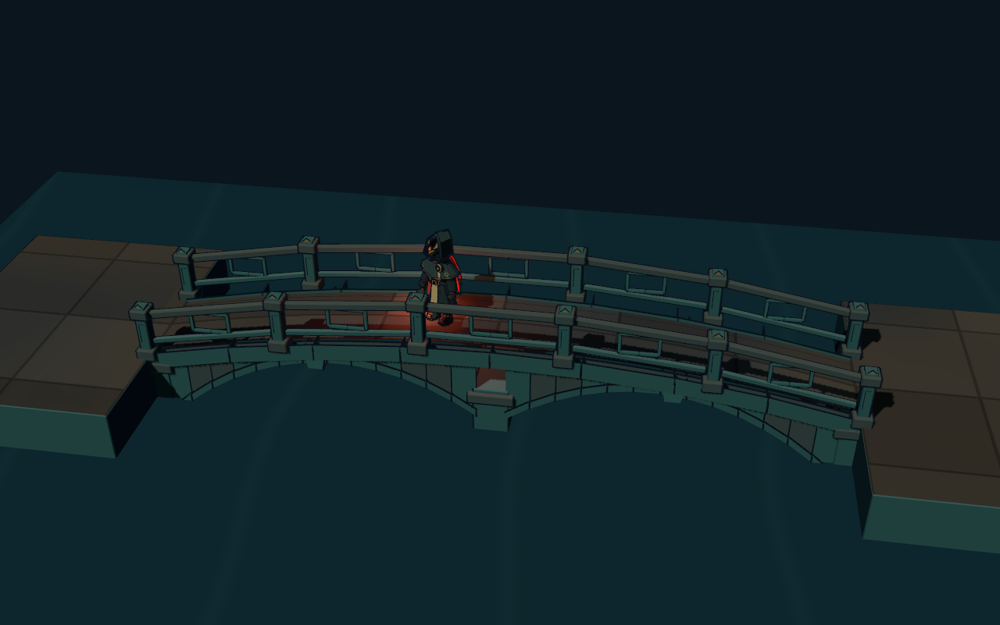
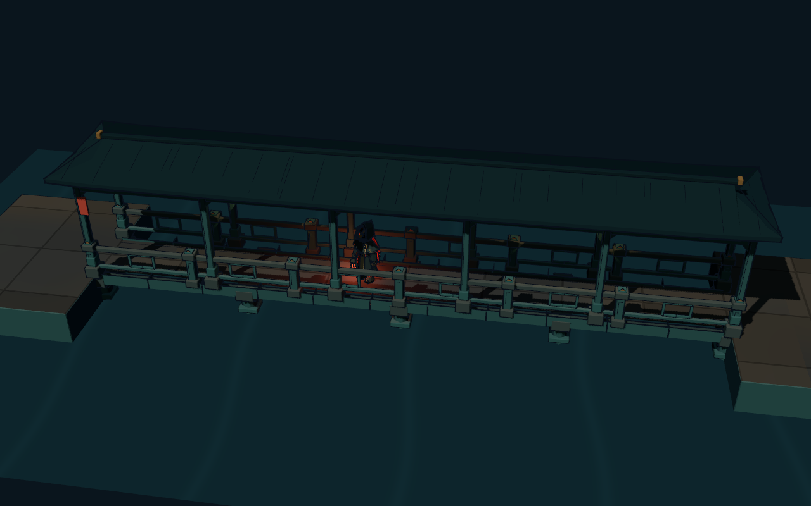
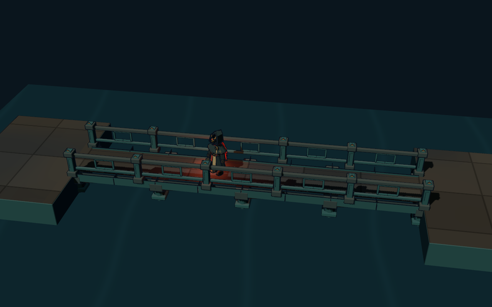
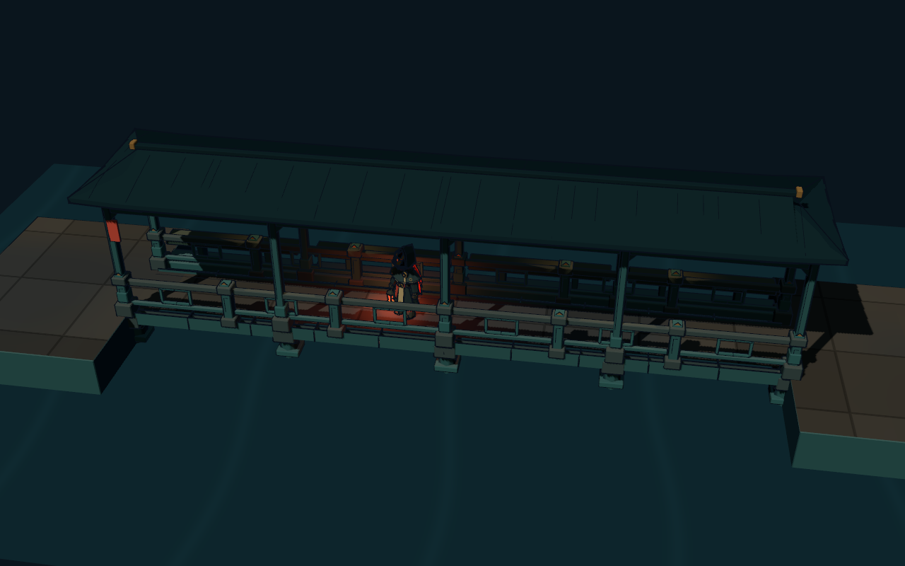

<!doctype html><html lang="zh-CN"><meta charset="utf-8"><title>桥路与连廊 · 丹青园林构件</title><style>*{box-sizing:border-box}body{margin:0;background:#0a151d;color:#d6c6a1;font-family:"Microsoft YaHei",sans-serif;padding:30px}header{height:110px;display:flex;align-items:center;justify-content:space-between;border-bottom:1px solid #355052;margin-bottom:18px}h1{font-size:32px;font-weight:500;margin:0 0 12px}p{color:#82999a;margin:0;font-size:17px}small{color:#ad8b50;font-size:16px;text-align:right;line-height:1.8}.grid{display:grid;grid-template-columns:1fr 1fr;gap:18px}figure{margin:0;border:1px solid #2c4148;background:#10232a;overflow:hidden}img{display:block;width:100%;aspect-ratio:1.6;object-fit:contain;background:#09141c}figcaption{height:92px;padding:14px 20px}b{font-size:23px;font-weight:500;display:block;margin-bottom:9px}span{font-size:17px;color:#8fa39f}footer{height:74px;display:flex;align-items:center;gap:26px}a{color:#b79a60;font-size:17px;text-decoration:none}a:hover{text-decoration:underline}@media(max-width:1200px){.grid{grid-template-columns:1fr}}</style><header><div><h1>桥路与连廊 · 丹青园林构件</h1><p>原生模型与运行地图共用 · 墨线轮廓 / 深瓦 / 丹青石材 / 旧金与朱砂点缀</p></div><small>Godot Forward+ 实时渲染<br>拱桥有实际高度，屋顶可按遮挡剖透</small></header><main class="grid"><figure><a href="01-arch.png"></a><figcaption><b>石拱桥</b><span>起伏桥面 · 分券拱石 · 加厚拱圈 · 拱脚与桥头</span></figcaption></figure><figure><a href="02-covered.png"></a><figcaption><b>廊桥</b><span>通长瓦顶 · 梁架花格 · 低照度暖灯 · 石墩托梁</span></figcaption></figure><figure><a href="03-pier.png"></a><figcaption><b>石柱桥</b><span>六棱石墩 · 叠石柱帽 · 铜横撑 · 回纹栏杆</span></figcaption></figure><figure><a href="04-gallery.png"></a><figcaption><b>连廊</b><span>侧坐槛 · 连续长檐 · 柱础 · 开敞花格</span></figcaption></figure></main><footer><a href="05-covered-cutaway.png">屋顶剖透</a><a href="06-runtime-gallery.png">实机连廊</a><a href="07-runtime-arch.png">实机拱桥</a><a href="08-runtime-pier.png">实机石柱桥</a><a href="09-runtime-junction.png">分叉接缝</a><a href="README.md">制作与接入说明</a></footer></html>